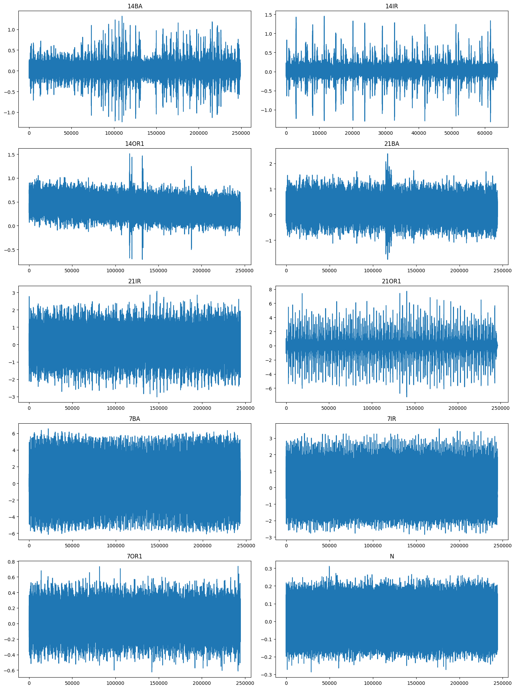
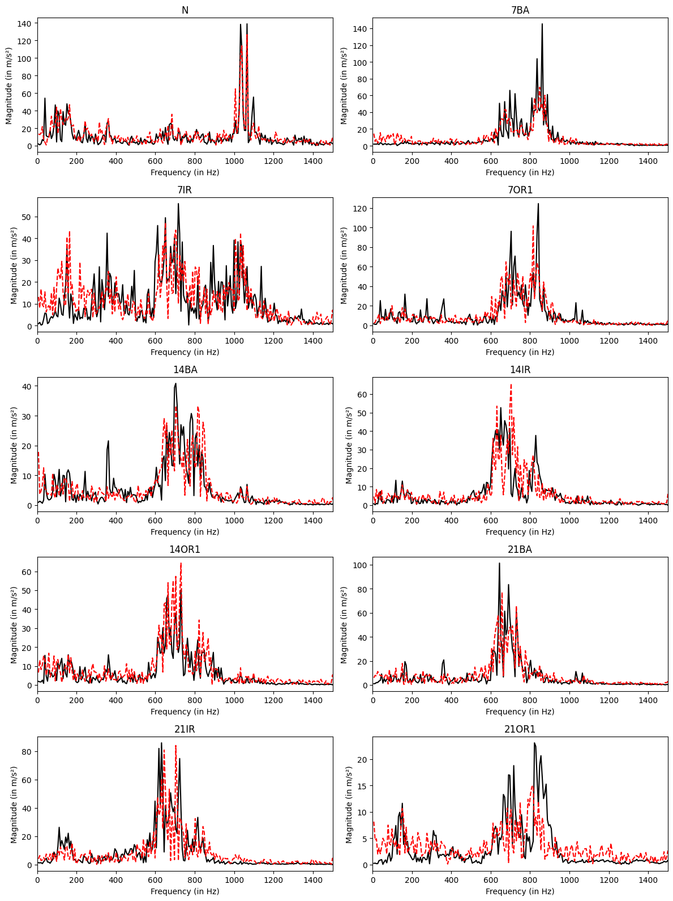
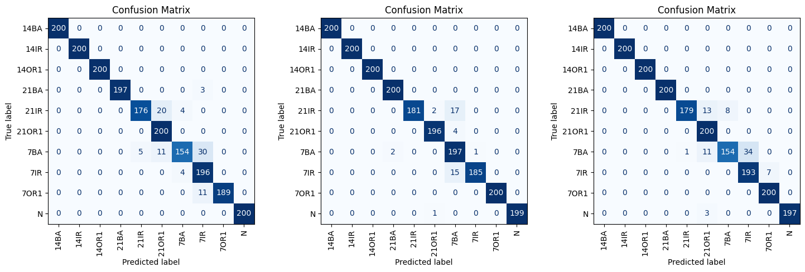

Abstract
Fault diagnosis in rotating machinery is often hindered by the scarcity of fault samples and the resulting class imbalance. Generative Adversarial Networks (GANs) are effective at dealing with this issue. In this work, an efficient Auxiliary Classifier Wasserstein GAN with Gradient Penalty (ACWGAN-GP)-based framework for synthetic data generation and fault classification has been implemented. This approach leverages a Temporal Convolutional Network (TCN) discriminator and a 1D-CNN generator. Both models incorporate positional embeddings, enabling a single trained network to generate diverse time-series representations that mimic the variability observed in real-world data. To ensure and evaluate the quality of the generated samples, statistical similarity was evaluated using four popular methods: Pearson Correlation Coefficient (PCC), Cosine Similarity (CS), Kullback-Leibler Divergence (KLDiv), and Maximum Mean Discrepancy (MMD). The generated data effectively augment the limited number of fault samples, mitigating class imbalance and enhancing the robustness of fault diagnosis. In the proposed framework, the discriminator plays a dual role: it guides the generator during adversarial training and serves as an independent fault classifier. The results of different bearing faults are validated using the CWRU bearing dataset. The obtained results demonstrate the robustness and effectiveness of the present approach.
Keywords: fault diagnosis, rotating machinery, generative adversarial networks, ACWGAN-GP, temporal convolutional networks, synthetic data, class imbalance, CWRU bearing dataset
Key results
All numbers on this page are reproduced by the released notebook (Final.ipynb) and checkpoints in the repository. The paper reports the full evaluation.
Method
The framework is an auxiliary-classifier Wasserstein GAN with gradient penalty. A 1D-CNN generator maps a 100-dimensional noise vector, concatenated with a learned class-label embedding, through five transposed-convolution layers to a 1824-sample vibration sequence. The discriminator is a temporal convolutional network with nine residual blocks (64 channels, kernel size 5, dilations 1 to 256) and two output heads: a Wasserstein critic score that guides the generator, and a class head that makes the same network a fault classifier.
- Data: CWRU drive-end accelerometer signals at 12 kHz, split into overlapping sequences of 1824 samples.
- Imbalanced GAN training set: 4800 normal sequences and 480 per fault class (10%); 200 test and 200 validation sequences per class.
- GAN training: 50 epochs, batch size 32, learning rate 10−4, gradient-penalty weight 10, five critic updates per generator update.
- Quality check: PCC, cosine similarity, KL divergence, MMD and a two-sample t-test between the FFT magnitude spectra of real and generated sequences, averaged over 100 generated samples per class.
- Fault diagnosis: the TCN discriminator is trained as a classifier for 20 epochs on 100 real sequences per fault class (1000 normal), augmented with 0, 400 or 900 generated sequences per fault class.

Results
Quality of Generated Signals
Table 1: Similarity Between Real and Generated FFT Magnitude Spectra, per Class (Mean of 100 Generated Samples)
| Class | Condition | Fault Size (mils) | PCC ↑ | Cosine Similarity ↑ | KL Divergence ↓ | MMD ↓ | t-Test p-Value |
|---|---|---|---|---|---|---|---|
| N | Normal | — | 0.853 | 0.874 | 0.306 | 0.014 | 0.646 |
| 7BA | Ball Fault | 7 | 0.795 | 0.806 | 0.442 | 0.097 | 0.127 |
| 7IR | Inner Race Fault | 7 | 0.690 | 0.744 | 0.452 | 0.085 | 0.089 |
| 7OR1 | Outer Race Fault | 7 | 0.772 | 0.795 | 0.390 | 0.089 | 0.253 |
| 14BA | Ball Fault | 14 | 0.725 | 0.759 | 0.488 | 0.070 | 0.248 |
| 14IR | Inner Race Fault | 14 | 0.764 | 0.789 | 0.406 | 0.065 | 0.194 |
| 14OR1 | Outer Race Fault | 14 | 0.739 | 0.766 | 0.434 | 0.098 | 0.051 |
| 21BA | Ball Fault | 21 | 0.763 | 0.783 | 0.402 | 0.073 | 0.143 |
| 21IR | Inner Race Fault | 21 | 0.773 | 0.793 | 0.415 | 0.098 | 0.167 |
| 21OR1 | Outer Race Fault | 21 | 0.702 | 0.729 | 0.620 | 0.081 | 0.270 |
| Mean (10 Classes) | 0.758 | 0.784 | 0.436 | 0.077 | 0.219 | ||
↑ higher is better; ↓ lower is better. A t-test p-value above 0.05 indicates no significant difference between real and generated spectra.

Fault Diagnosis
Table 2: Test Performance of the TCN Classifier Trained with and without Generated Samples (200 Test Sequences per Class)
| Samples per Fault Class | Real | Generated | Accuracy (%) | Precision | Recall | F1-Score |
|---|---|---|---|---|---|---|
| 100 | 100 | 0 | 95.60 | 0.96 | 0.96 | 0.96 |
| 500 | 100 | 400 | 97.90 | 0.98 | 0.98 | 0.98 |
| 1000 | 100 | 900 | 96.15 | 0.96 | 0.96 | 0.96 |
Precision, recall and F1-score are weighted averages over the ten classes. The normal class has 1000 real training sequences in every setting.

Code
The repository contains the full pipeline in a single notebook, the trained generator, discriminator and classifier checkpoints, the generated signals and the CWRU data used.
git clone https://github.com/robotics1106/An-Efficient-Approach-for-Synthetic-Data-Generation-and-Fault-Diagnosis-for-Rotating-Machinery.git cd An-Efficient-Approach-for-Synthetic-Data-Generation-and-Fault-Diagnosis-for-Rotating-Machinery jupyter notebook Final.ipynb
Citation
@inproceedings{chakraborty2025efficient,
title = {An Efficient Approach for Synthetic Data Generation and
Fault Diagnosis for Rotating Machinery},
author = {Chakraborty, Ritabrata and Mian, Tauheed and Kundu, Pradeep},
booktitle = {15th Prognostics and System Health Management Conference
(PHM 2025)},
series = {IET Conference Proceedings},
volume = {2025},
number = {10},
pages = {241--247},
publisher = {IET},
year = {2025},
doi = {10.1049/icp.2025.2364}
}